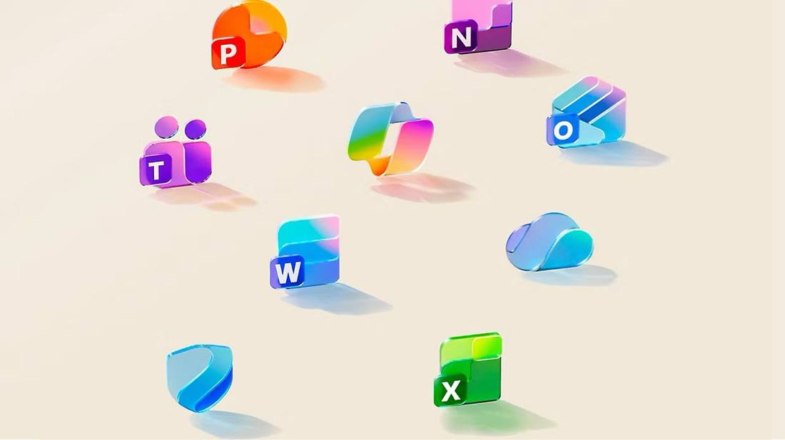
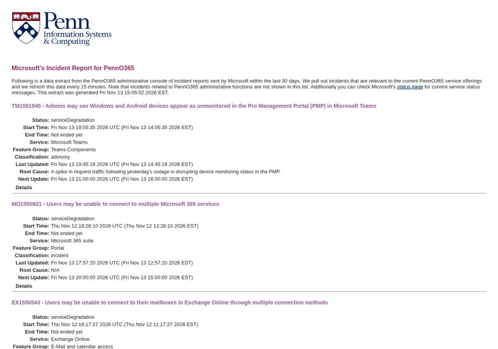

Microsoft 365 Outage Passes 27 Hours as 20:02 UTC Update Says Mail Still Catching Up
Update to flashes 331 through 349: at 20:02 UTC on November 13, Microsoft posted a new service-health update for its global Microsoft 365 outage, read live on the public status page at about 20:05-20:06 UTC (showing 'Last updated: Friday, November 13, 2026 at 8:02:18 PM UTC'). As infrastructure stabilizes, Microsoft is still draining queued messages and rebalancing traffic, so customers may see improved sign-in and access while delivery and processing continue to catch up. It gives no time for full recovery yet, and says service access can recover before mail flow fully normalizes. The page still lists Microsoft 365 (Business or Enterprise) as service degradation; the incident is not resolved. The outage, open since 16:17 UTC on November 12, is past 27 hours and 45 minutes; the next update is promised by 00:00 UTC on November 14. The 17:57 UTC update had said the underlying issue was addressed, naming an issue introduced during an earlier network capacity upgrade.

- 01THE NEW UPDATE — At 20:02 UTC on November 13, Microsoft posted a new service-health update, read live on the public status page at about 20:05-20:06 UTC: as infrastructure stabilizes, it is still draining queued messages and rebalancing traffic, so customers may see improved sign-in and access while delivery and processing continue to catch up. The update gives no time for full recovery yet and says service access can recover before mail flow fully normalizes. The page still lists Microsoft 365 (Business or Enterprise) as service degradation. The next update is promised by 00:00 UTC on November 14.
- 02THE INTERVENING STEP — The 17:57 UTC update had said Microsoft was seeing broad recovery and stability and had addressed the underlying issue, a technical issue not related to cyber or AI agents, introduced by an issue during an earlier network capacity upgrade that surfaced following a recent network change. The outage opened at 16:17 UTC on November 12 (EX1550543) and widened at 18:26 UTC (MO1550821); servers returned to service and froze again under traffic at 00:00 UTC and 04:22 UTC. The Power Platform incident PP1550869 was declared restored at 15:50 UTC with a post-incident report promised within five days.
- 03THE WATCHPOINT — Next Microsoft update due by 00:00 UTC on November 14; whether any service or region is declared recovered, whether the queued-message drain is shrinking, or whether the update repeats the same watching brief; the post-incident report with a confirmed root cause. Copilot and the OpenAI and Anthropic Microsoft 365 connectors remain affected. The public status page still lists the incident as service degradation.
WHAT HAPPENEDWhat Happened
Microsoft's global Microsoft 365 outage passed 27 hours and 45 minutes, and its newest update splits the recovery in two. At 20:02 UTC on November 13, 2026, Microsoft posted a fresh service-health update: as infrastructure stabilizes, it is still draining queued messages and rebalancing traffic, so customers may see improved sign-in and access while delivery and processing continue to catch up. The update gives no time for full recovery yet, and it adds that service access can recover before mail flow fully normalizes. The next update is promised by 00:00 UTC on November 14.
The wording is a step down from the 17:57 UTC update, which said Microsoft was seeing broad recovery and stability and had addressed the underlying issue. Three hours later the picture is narrower: sign-in and access are improving, but the mail backlog is still being drained and traffic is still being rebalanced. The public status page still lists Microsoft 365 (Business or Enterprise) as service degradation, and the incident is not resolved. The outage opened at 16:17 UTC on November 12, when Exchange Online users lost mailbox access, and widened at 18:26 UTC into a Microsoft 365 advisory covering Outlook, Teams, SharePoint Online, Copilot, Defender, Purview, Planner, To Do, Intune and Power BI.
The 20:02 UTC update matters because it is the first to separate the two recoveries. Earlier updates treated the incident as one recovery; this one says access can come back while mail flow lags behind. That matches what users have reported all day: mailboxes opening while messages arrive hours late. Microsoft has promised a full post-incident report once its review is complete, with the root cause as stated an issue introduced during an earlier network capacity upgrade that surfaced following a recent network change.
WHY IT MATTERSAccess first, mail second: the recovery now has two clocks
The 20:02 UTC update reframes the endgame. The 17:57 UTC update said the underlying issue was addressed and recovery was broad; the new update says the infrastructure is stabilizing while queued messages are still being drained and traffic rebalanced. Sign-in and access improving while delivery and processing catch up means the incident will end in stages, not all at once, and the stage that matters most to businesses, mail actually arriving, is the one still lagging. The absence of any time for full recovery, three hours after the cause was declared fixed, says the drain is not yet predictable.
For the AI stack the exposure is still open. Copilot Chat may not load or answer and may not reach email, calendar or files, and the OpenAI and Anthropic Microsoft 365 connectors were reported affected by Reuters. Companies that layered AI assistants on top of Microsoft 365 are still waiting on the same mailbox layer as everyone else. The 00:00 UTC update will show whether the mail drain is shrinking or whether the backlog is holding steady, which is the number that decides when this outage is actually over.
WHAT TO WATCHThe 00:00 UTC update, then the post-incident report
The next fact is the 00:00 UTC update on November 14: whether Microsoft declares any service or region recovered, whether it gives a time for full restoration, and whether the queued-message drain is described as shrinking. Watch whether access recovery holds under Friday evening traffic or repeats the pattern of the two recoveries that froze again at 00:00 and 04:22 UTC on November 13.
The post-incident report will carry the lasting answers: which network capacity upgrade introduced the issue, what the recent network change was that surfaced it, why restored servers froze again under traffic at 00:00 and 04:22 UTC, and what the traffic influx was. Until it lands, the capacity-upgrade explanation is Microsoft's own account, not an independently verified root cause. The earlier Power Platform incident PP1550869 was declared restored at 15:50 UTC with a post-incident report promised within five days.
SIGNAL JUDGMENT — ANALYSISTwenty-seven hours in, access is back but the mail is still late
Tokenta Signal's judgment: The 20:02 UTC update is honest about a split recovery, and that honesty is the news. Three hours after Microsoft said the underlying issue was addressed, it is still draining queued messages and rebalancing traffic, with no time for full recovery. Access improving while mail flow lags means the outage will end in stages, and the stage businesses feel most, messages actually arriving, is the one still behind. Treat the outage as nearly over for sign-in and still open for email until the 00:00 UTC update shows the backlog shrinking.
WHAT REMAINS UNCERTAINWhat Remains Uncertain
EVIDENCEEvidence

Microsoft's public service health status page, read live at about 20:05-20:06 UTC on November 13, 2026, showing 'Last updated: Friday, November 13, 2026 at 8:02:18 PM UTC' with the 20:02 UTC update for the Microsoft 365 incident. The update says that as infrastructure stabilizes, Microsoft is still draining queued messages and rebalancing traffic, so customers may see improved sign-in and access while delivery and processing continue to catch up; that it has no time for full recovery yet; and that service access can recover before mail flow fully normalizes. The page still lists Microsoft 365 (Business or Enterprise) as service degradation, and the next update is promised by 00:00 UTC on November 14. The public page shows the aggregated incident 'Users may be unable to connect to multiple Microsoft 365 services' rather than the admin-center IDs MO1550821 and EX1550543.
PRIMARY SOURCESPrimary Sources
- Microsoft Service Health: Microsoft 365 outage status
https://status.cloud.microsoft - University of Pennsylvania: Microsoft Service Health incident mirror (EX1550543 / MO1550821)
https://mailservices.isc.upenn.edu/computing/email/penno365/alerts/ms-incidents.html - MacRumors: Microsoft 365 Outage Resolving After Nearly 24 Hours
https://www.macrumors.com/2026/11/13/microsoft-365-outage-resolving/
RELATEDRelated Intelligence
- Microsoft Warns of Phishing Campaign Exploiting the Microsoft 365 Outage
- Microsoft 365 Outage Fully Closed as Business and Exchange Incidents Marked Service Restored
- Microsoft 365 Consumer Incident Remediated as Email Backlog Clears; Business Outage Still Open
- FAA Lifts Nationwide Ground Stop After Four Hours; Officials Blame Aging Equipment, Rule Out Cyberattack